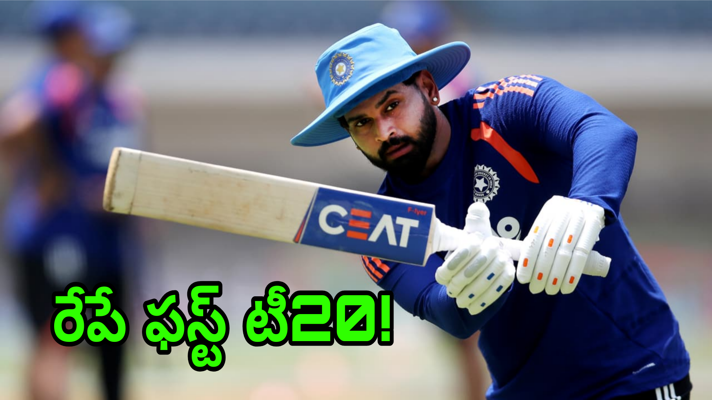

భారత్, వెస్టిండీస్ మధ్య ఐదు టీ20ల సిరీస్కు రంగం సిద్ధమైంది. వన్డే సిరీస్ ముగిసిన వెంటనే ఇరు జట్లు ఇప్పుడు పొట్టి ఫార్మాట్పై దృష్టి పెట్టాయి. సిరీస్లో భాగంగా తొలి టీ20 మ్యాచ్ లక్నో వేదికగా జరగనుంది. రేపు సాయంత్రం 7 గంటల నుంచి ప్రారంభం కానున్న ఈ మ్యాచ్పై క్రికెట్ అభిమానుల్లో భారీ ఆసక్తి నెలకొంది. వన్డే సిరీస్ను సొంతం చేసుకున్న ఉత్సాహంతో టీమిండియా బరిలోకి దిగుతుండగా, చివరి వన్డేలో సాధించిన విజయంతో వెస్టిండీస్ కూడా ఆత్మవిశ్వాసంతో ఉంది. దీంతో తొలి టీ20లో ఇరు జట్ల మధ్య హోరాహోరీ పోరు తప్పదనే అంచనాలు వ్యక్తమవుతున్నాయి.
టీ20 ఫార్మాట్ అంటేనే క్షణాల్లో మ్యాచ్ పరిస్థితులు మారిపోవడం సాధారణం. ఒక బ్యాటర్ పవర్ప్లేలో వేగంగా పరుగులు చేయడం లేదా ఒక బౌలర్ వరుసగా రెండు వికెట్లు తీయడం మ్యాచ్ గమనాన్నే మార్చేస్తుంది. అందుకే తొలి టీ20లో సరైన ప్లేయింగ్-11ను ఎంచుకోవడం రెండు జట్లకూ అత్యంత కీలకంగా మారింది. ముఖ్యంగా భారత జట్టులో పలువురు ప్రతిభావంతులైన ఆటగాళ్లు ఉండటంతో తుది పదకొండు మందిని ఎంపిక చేయడం టీమ్ మేనేజ్మెంట్కు అంత సులభమైన విషయం కాదు.

వైభవ్ సూర్యవంశీకి చోటు దక్కుతుందా?
తొలి టీ20కి ముందు అందరి దృష్టిని ఆకర్షిస్తున్న అంశాల్లో వైభవ్ సూర్యవంశీ పేరు ముందుంది. తక్కువ వయసులోనే క్రికెట్ ప్రపంచంలో తనదైన ముద్ర వేసిన ఈ యువ ఆటగాడిపై అభిమానుల్లో భారీ అంచనాలు ఉన్నాయి. అతడి బ్యాటింగ్లో కనిపించే దూకుడు, వేగంగా పరుగులు చేయాలనే ధోరణి టీ20 క్రికెట్కు బాగా సరిపోతాయి. అందుకే అతడు తుది జట్టులో ఉంటాడా లేదా అన్నదానిపై చర్చ జరుగుతోంది.
అయితే టీమ్ మేనేజ్మెంట్ ముందు ఉన్న అసలు సమస్య జట్టులో అందరికీ చోటు కల్పించడం. ఇప్పటికే టాప్ ఆర్డర్లో అభిషేక్ శర్మ, సంజూ సాంసన్, ఇషాన్ కిషన్ వంటి ఆటగాళ్లు ఉన్నారు. వీరితో పాటు శ్రేయస్ అయ్యర్, తిలక్ వర్మ, శివమ్ దూబే, నితీశ్ కుమార్ రెడ్డి వంటి బ్యాటింగ్ ఆప్షన్లు కూడా ఉన్నాయి. దీంతో ఒకే ఒక్క ఆటగాడిని ఎంపిక చేయడానికి కూడా కాంబినేషన్ను బట్టి నిర్ణయం తీసుకోవాల్సి ఉంటుంది.
గౌతమ్ గంభీర్ చేసిన వ్యాఖ్యల నేపథ్యంలో వైభవ్ విషయంలో సస్పెన్స్ మరింత పెరిగింది. యువ ఆటగాడితో మాట్లాడి అతడికి పరిస్థితిని వివరించినట్లు గంభీర్ వెల్లడించడం కూడా చర్చనీయాంశంగా మారింది. దీన్ని బట్టి చూస్తే తొలి టీ20లో వైభవ్కు చోటు దక్కకపోవచ్చనే అంచనాలు బలపడుతున్నాయి. అయితే ఇది అధికారిక నిర్ణయం కాదు. మ్యాచ్కు ముందు పిచ్ పరిస్థితులు, టీమ్ కాంబినేషన్, ప్రత్యర్థి బౌలింగ్ బలం వంటి అంశాలను పరిశీలించిన తర్వాత తుది నిర్ణయం తీసుకునే అవకాశం ఉంది.
అభిషేక్ శర్మకు ఓపెనింగ్లో కీలక బాధ్యత
టీమిండియా బ్యాటింగ్ ప్రారంభించే బాధ్యతలో అభిషేక్ శర్మ ఉండే అవకాశం కనిపిస్తోంది. టీ20 క్రికెట్లో పవర్ప్లేను ఉపయోగించుకోవడం చాలా ముఖ్యమైన విషయం. మొదటి ఆరు ఓవర్లలో ఫీల్డింగ్ పరిమితులను ఉపయోగించుకుని బౌలర్లపై ఒత్తిడి పెంచగల సామర్థ్యం అభిషేక్కు ఉంది.
అతడు మొదటి ఓవర్ల నుంచే దూకుడుగా ఆడితే భారత జట్టుకు మంచి ప్రారంభం లభిస్తుంది. వెస్టిండీస్ కొత్త బంతి బౌలర్లను ఎదుర్కొనే సమయంలో అభిషేక్ షాట్ సెలక్షన్ కీలకంగా మారనుంది. అతడి వికెట్ త్వరగా పడితే మిడిల్ ఆర్డర్పై ఒత్తిడి పెరిగే అవకాశం ఉంటుంది. అందువల్ల తొలి టీ20లో అభిషేక్ పాత్ర చాలా ముఖ్యమైనది.
సంజూ సాంసన్ మరోసారి ఓపెనర్గా?
మరో ఓపెనింగ్ స్థానానికి సంజూ సాంసన్ పేరు బలంగా వినిపిస్తోంది. టీ20 క్రికెట్లో సంజూకు భారీ షాట్లు ఆడే సామర్థ్యం ఉంది. బౌలర్ లైన్, లెంగ్త్ తప్పితే వెంటనే బౌండరీగా మార్చగలడు. వికెట్ కీపర్గా కూడా అతడు జట్టుకు ఉపయోగపడటం అదనపు ప్రయోజనం.
అభిషేక్తో కలిసి సంజూ ఓపెనింగ్ చేస్తే ఎడమ, కుడి చేతి బ్యాటింగ్ కాంబినేషన్ ఏర్పడుతుంది. దీంతో ప్రత్యర్థి బౌలర్లకు లైన్ మార్చాల్సిన పరిస్థితి వస్తుంది. పవర్ప్లేలో ఇద్దరూ దూకుడుగా ఆడితే భారత్ భారీ స్కోరుకు బాటలు వేసే అవకాశం ఉంటుంది.
అయితే సంజూను మూడో స్థానంలో ఉంచి వైభవ్ను ఓపెనింగ్కు పంపే అవకాశం కూడా పూర్తిగా కొట్టిపారేయలేం. ఇదే కారణంగా టాస్ వరకు భారత బ్యాటింగ్ క్రమంపై ఆసక్తి కొనసాగనుంది.
ఇషాన్ కిషన్కు మరో కీలక అవకాశం
మూడో స్థానంలో ఇషాన్ కిషన్కు అవకాశం దక్కే అవకాశం ఉంది. టాప్ ఆర్డర్లో వేగంగా పరుగులు చేయగల బ్యాటర్గా ఇషాన్కు మంచి గుర్తింపు ఉంది. ఎడమచేతి బ్యాటర్ కావడంతో ప్రత్యర్థి బౌలింగ్ కాంబినేషన్ను కూడా మార్చే పరిస్థితి ఉంటుంది.
ఓపెనర్లలో ఒకరు త్వరగా ఔటైతే ఇషాన్పై బాధ్యత పెరుగుతుంది. మరోవైపు ఓపెనర్లు మంచి ఆరంభం ఇస్తే ఇషాన్ తన సహజ దూకుడుతో ఇన్నింగ్స్ను ముందుకు తీసుకెళ్లవచ్చు. మధ్య ఓవర్లలో స్పిన్నర్లపై ఒత్తిడి పెంచడం అతడి ప్రధాన లక్ష్యంగా ఉండొచ్చు.
శ్రేయస్ అయ్యర్కు బ్యాటింగ్తో పాటు కెప్టెన్సీ పరీక్ష
నాలుగో స్థానంలో శ్రేయస్ అయ్యర్ కీలక పాత్ర పోషించనున్నాడు. బ్యాటర్గా మాత్రమే కాకుండా కెప్టెన్గా కూడా ఈ సిరీస్ అతడికి పరీక్షగా మారనుంది. టీ20లో నిర్ణయాలు తీసుకునేందుకు ఎక్కువ సమయం ఉండదు. ఒక ఓవర్లో మ్యాచ్ పూర్తిగా మారిపోయే అవకాశం ఉంటుంది.
అందువల్ల బౌలర్లను సరైన సమయంలో ఉపయోగించడం, ఫీల్డింగ్ సెటప్ మార్చడం, ప్రత్యర్థి బ్యాటర్ల బలహీనతలను గుర్తించడం వంటి విషయాల్లో శ్రేయస్ కెప్టెన్సీ కీలకం కానుంది. బ్యాటింగ్లో కూడా జట్టు ఒత్తిడిలో ఉన్నప్పుడు ఇన్నింగ్స్ను నిలబెట్టే బాధ్యత అతడిపైనే ఉంటుంది.
తిలక్ వర్మపై కూడా అంచనాలు
ఐదో స్థానంలో తిలక్ వర్మ ఉండే అవకాశం ఉంది. టీ20 క్రికెట్కు తిలక్ ఆటతీరు బాగా సరిపోతుంది. ఎడమచేతి బ్యాటర్గా ఉండటం, స్పిన్ను సమర్థంగా ఎదుర్కొనే సామర్థ్యం, అవసరమైనప్పుడు వేగంగా పరుగులు చేయగలగడం అతడికి ఉన్న ప్రధాన బలాలు.
మ్యాచ్ పరిస్థితిని బట్టి తిలక్ తన బ్యాటింగ్ వేగాన్ని మార్చుకోవాల్సి ఉంటుంది. వికెట్లు వరుసగా పడితే ఇన్నింగ్స్ను నిర్మించాల్సి ఉంటుంది. టాప్ ఆర్డర్ మంచి ఆరంభం ఇస్తే చివరి ఓవర్లలో వేగంగా పరుగులు చేయాల్సి ఉంటుంది.
శివమ్ దూబే.. భారీ షాట్లకు మరో ఆప్షన్
ఆరవ స్థానంలో శివమ్ దూబే ఉండే అవకాశం ఉంది. భారీ సిక్సర్లు కొట్టగల బ్యాటర్గా దూబేకు ప్రత్యేక గుర్తింపు ఉంది. ముఖ్యంగా స్పిన్నర్లపై అతడు దూకుడుగా ఆడగలడు.
టీ20లో చివరి ఐదు ఓవర్లు చాలా కీలకం. ఆ సమయంలో దూబే క్రీజులో ఉంటే భారత స్కోరు వేగంగా పెరిగే అవకాశం ఉంటుంది. అవసరమైతే కొన్ని ఓవర్లు బౌలింగ్ చేయడం ద్వారా జట్టు కాంబినేషన్కు కూడా అతడు ఉపయోగపడగలడు.
నితీశ్ కుమార్ రెడ్డి.. జట్టుకు బ్యాలెన్స్
ఏడో స్థానంలో నితీశ్ కుమార్ రెడ్డి ఉండే అవకాశం కనిపిస్తోంది. యువ ఆల్రౌండర్గా నితీశ్కు జట్టులో ప్రత్యేకమైన పాత్ర ఉంది. బ్యాటింగ్తో పాటు బౌలింగ్ చేయగల సామర్థ్యం ఉండటం వల్ల కెప్టెన్కు అదనపు ఆప్షన్ లభిస్తుంది.
టీ20లో ఒక అదనపు బౌలింగ్ ఆప్షన్ ఉండటం చాలా ముఖ్యం. ప్రధాన బౌలర్లలో ఎవరికైనా ఆ రోజు పరిస్థితులు అనుకూలంగా లేకపోతే ఆల్రౌండర్తో కొన్ని ఓవర్లు వేయించవచ్చు. అదే సమయంలో బ్యాటింగ్లో కూడా నితీశ్ చివర్లో ఉపయోగపడగలడు.
అక్షర్ పటేల్.. స్పిన్తో పాటు బ్యాటింగ్ బలం
ఎనిమిదో స్థానంలో అక్షర్ పటేల్కు చోటు దక్కే అవకాశం ఉంది. లక్నో పరిస్థితుల్లో స్పిన్ బౌలింగ్ కీలకంగా మారితే అక్షర్ పాత్ర మరింత పెరగవచ్చు.
అక్షర్ కేవలం బౌలింగ్లోనే కాకుండా బ్యాటింగ్లోనూ జట్టుకు ఉపయోగపడగలడు. తక్కువ బంతుల్లో కీలక పరుగులు చేయగల సామర్థ్యం అతడికి ఉంది. అందువల్ల ఎనిమిదో స్థానంలో అక్షర్ ఉండటం వల్ల భారత జట్టుకు బ్యాటింగ్ డెప్త్ కూడా పెరుగుతుంది.
కుల్దీప్ యాదవ్.. మధ్య ఓవర్లలో ప్రధాన ఆయుధం
తొమ్మిదో స్థానంలో కుల్దీప్ యాదవ్ ఉండే అవకాశం ఉంది. అతడి వైవిధ్యమైన స్పిన్ వెస్టిండీస్ బ్యాటర్లకు పరీక్షగా మారవచ్చు. టీ20లో మధ్య ఓవర్లలో వికెట్లు తీయడం చాలా ముఖ్యం. ఆ సమయంలో కుల్దీప్ తన స్పిన్తో మ్యాచ్ను భారత్ వైపు తిప్పగలడు.
వెస్టిండీస్ బ్యాటర్లు దూకుడుగా ఆడేందుకు ప్రయత్నించే సమయంలో కుల్దీప్కు వికెట్లు తీసే అవకాశాలు కూడా పెరుగుతాయి. అయితే లైన్, లెంగ్త్లో చిన్న పొరపాటు జరిగినా టీ20లో బౌలర్పై భారీ దెబ్బ పడే ప్రమాదం ఉంటుంది.
అర్ష్దీప్ సింగ్పై డెత్ ఓవర్ల బాధ్యత
పేస్ విభాగంలో అర్ష్దీప్ సింగ్ కీలకంగా మారనున్నాడు. కొత్త బంతితో స్వింగ్ చేయడం, డెత్ ఓవర్లలో యార్కర్లు వేయడం అతడి ప్రధాన బలాలు.
వెస్టిండీస్ బ్యాటింగ్లో పవర్ హిట్టర్లు ఉండటంతో చివరి ఓవర్లలో అర్ష్దీప్కు పెద్ద సవాలు ఎదురుకానుంది. మొదటి ఆరు ఓవర్లలో వికెట్ సాధిస్తే భారత జట్టుకు మంచి ప్రారంభం లభిస్తుంది. అదే సమయంలో చివరి ఓవర్లలో పరుగులను నియంత్రించడం కూడా అతడి బాధ్యతే.
ప్రిన్స్ యాదవ్కు అవకాశం వస్తే..
11వ స్థానానికి ప్రిన్స్ యాదవ్ పేరు కూడా వినిపిస్తోంది. యువ పేసర్కు అంతర్జాతీయ స్థాయిలో తన సామర్థ్యాన్ని చూపించేందుకు ఇది మంచి అవకాశం కావచ్చు.
అయితే తుది జట్టులో పేస్ కాంబినేషన్ ఎలా ఉండాలన్నది మ్యాచ్కు ముందు నిర్ణయించాల్సిన అంశం. పిచ్ పేసర్లకు అనుకూలంగా ఉంటే అదనపు పేసర్కు అవకాశం రావచ్చు. స్పిన్కు అనుకూలమైన పరిస్థితులు ఉంటే మరో స్పిన్నర్ను ఎంపిక చేసే అవకాశం కూడా ఉంటుంది.
భారత్ అంచనా ప్లేయింగ్-11
ప్రస్తుతం అందుబాటులో ఉన్న సమాచారం, జట్టు కాంబినేషన్, ఆటగాళ్ల పాత్రలను పరిశీలిస్తే భారత్ తరఫున తొలి టీ20కి అంచనా జట్టు ఇలా ఉండొచ్చు.
అభిషేక్ శర్మ, సంజూ సాంసన్, ఇషాన్ కిషన్, శ్రేయస్ అయ్యర్, తిలక్ వర్మ, శివమ్ దూబే, నితీశ్ కుమార్ రెడ్డి, అక్షర్ పటేల్, కుల్దీప్ యాదవ్, ప్రిన్స్ యాదవ్, అర్ష్దీప్ సింగ్.
ఈ కాంబినేషన్లో బ్యాటింగ్కు మంచి లోతు ఉంది. టాప్ ఆర్డర్ నుంచి లోయర్ ఆర్డర్ వరకు పరుగులు చేయగల ఆటగాళ్లు ఉన్నారు. అదే సమయంలో స్పిన్, పేస్, ఆల్రౌండర్ల కలయిక కూడా జట్టుకు సమతుల్యతను ఇస్తుంది.
వెస్టిండీస్ను తక్కువగా అంచనా వేయడం ప్రమాదమే
భారత్ వన్డే సిరీస్లో ఆధిపత్యం చూపించినప్పటికీ టీ20లో వెస్టిండీస్ను తక్కువగా అంచనా వేయడం మాత్రం ప్రమాదకరం. టీ20 క్రికెట్లో ఆ జట్టుకు సహజంగానే దూకుడైన ఆటతీరు ఉంది. కొద్దిసేపు బ్యాటింగ్ చేసినా మ్యాచ్ను పూర్తిగా మార్చగల హిట్టర్లు వెస్టిండీస్లో ఉన్నారు.
చివరి వన్డేలో సాధించిన విజయం కూడా ఆ జట్టుకు మానసికంగా బలం ఇచ్చే అవకాశం ఉంది. అందువల్ల భారత్ తొలి టీ20లో మొదటి నుంచే పూర్తి స్థాయి ప్రదర్శన ఇవ్వాల్సి ఉంటుంది.
లక్నో మ్యాచ్లో టాస్ కీలకం
లక్నోలో పిచ్ పరిస్థితులు మ్యాచ్ ఫలితంపై ప్రభావం చూపే అవకాశం ఉంది. టాస్ గెలిచిన జట్టు ముందుగా బ్యాటింగ్ చేయాలా, బౌలింగ్ ఎంచుకోవాలా అన్నది పరిస్థితులను బట్టి నిర్ణయిస్తుంది.
టీ20లో మంచు ప్రభావం కూడా కీలకంగా మారవచ్చు. రెండో ఇన్నింగ్స్లో బంతి బ్యాట్పైకి సులభంగా వస్తే ఛేజింగ్ చేసే జట్టుకు ప్రయోజనం కలిగే అవకాశం ఉంటుంది. అందువల్ల టాస్ తర్వాత ఇరు జట్ల వ్యూహాలు మారవచ్చు.
ఐదు టీ20ల సిరీస్ కావడంతో అవకాశాలు చాలానే
ఇది ఒక్క మ్యాచ్ సిరీస్ కాదు. ఐదు టీ20లు ఉండటంతో తొలి మ్యాచ్లో జరిగిన పొరపాట్లను రెండో మ్యాచ్లో సరిదిద్దుకునే అవకాశం ఇరు జట్లకూ ఉంటుంది. అలాగే మొదటి మ్యాచ్లో బెంచ్పై ఉన్న ఆటగాళ్లకు తర్వాతి మ్యాచ్ల్లో అవకాశం రావచ్చు.
అందుకే తొలి టీ20లో వైభవ్ సూర్యవంశీకి అవకాశం రాకపోయినా అతడి సిరీస్ ముగిసినట్టుగా భావించాల్సిన అవసరం లేదు. జట్టు అవసరాలను బట్టి తర్వాతి మ్యాచ్ల్లో అతడిని తుది జట్టులోకి తీసుకునే అవకాశం ఉంటుంది.
వైభవ్కు ఇదే చివరి అవకాశం కాదు
వైభవ్ విషయంలో ప్రస్తుతం జరుగుతున్న చర్చ అంతా తొలి టీ20 చుట్టూనే ఉంది. ఒక యువ ఆటగాడికి ఒక మ్యాచ్లో చోటు రాకపోవడం అతడి ప్రతిభపై నిర్ణయం కాదు. అంతర్జాతీయ క్రికెట్లో జట్టు కాంబినేషన్ కూడా అంతే ముఖ్యమైనది.
వైభవ్కు అవకాశం వచ్చినప్పుడు దాన్ని ఉపయోగించుకోవడం అతడి చేతుల్లోనే ఉంటుంది. తుది జట్టులో చోటు లభించిన మ్యాచ్లో మంచి ఇన్నింగ్స్ ఆడితే తర్వాతి మ్యాచ్ల్లో అతడి స్థానం మరింత బలపడవచ్చు.
అసలు తుది జట్టు ఎప్పుడు తెలుస్తుంది?
ప్రస్తుతం చర్చలో ఉన్న అన్ని పేర్లు అంచనాలే. అధికారికంగా ప్రకటించే ప్లేయింగ్-11 మాత్రమే తుది జట్టు. టాస్ సమయంలో కెప్టెన్ జట్టు వివరాలను ప్రకటించే వరకు ఒకటి రెండు మార్పులకు అవకాశం ఉంటుంది.
పిచ్ పరిస్థితులు, ప్రత్యర్థి జట్టు కాంబినేషన్, ఆటగాళ్ల ఫామ్, బౌలింగ్ ఆప్షన్లు.. ఇలా అనేక అంశాలను పరిగణనలోకి తీసుకున్న తర్వాతే టీమ్ మేనేజ్మెంట్ తుది నిర్ణయం తీసుకోనుంది.
అభిమానుల్లో భారీ ఆసక్తి
తొలి టీ20పై అభిమానుల్లో ఇప్పటికే ఆసక్తి పెరిగింది. ముఖ్యంగా వన్డే సిరీస్ తర్వాత టీ20 ఫార్మాట్లో భారత్ ఎలా ఆడబోతోందన్నది చూడాలని అభిమానులు ఆసక్తిగా ఎదురుచూస్తున్నారు.
యువ ఆటగాళ్లకు ఎంత ప్రాధాన్యం ఇస్తారు? వైభవ్కు అవకాశం వస్తుందా? ఓపెనింగ్ జోడీ ఎవరు? శ్రేయస్ కెప్టెన్సీ ఎలా ఉంటుంది? కుల్దీప్, అక్షర్ కలిసి ఎలా బౌలింగ్ చేస్తారు? వంటి ప్రశ్నలకు మ్యాచ్ ప్రారంభమైన తర్వాతే సమాధానాలు లభించనున్నాయి.
మొత్తంగా చూస్తే..
భారత్-వెస్టిండీస్ తొలి టీ20 కేవలం ఐదు మ్యాచ్ల సిరీస్కు ఆరంభం మాత్రమే అయినప్పటికీ రెండు జట్లకూ ఇది చాలా ముఖ్యమైన మ్యాచ్. భారత్ విజయంతో సిరీస్ను మొదలుపెట్టాలని చూస్తుండగా, వెస్టిండీస్ చివరి వన్డేలో సాధించిన ఊపును టీ20ల్లోకి తీసుకురావాలని భావిస్తోంది.
టీమిండియా అంచనా జట్టును పరిశీలిస్తే అభిషేక్ శర్మ, సంజూ సాంసన్ల ఓపెనింగ్ జోడీ నుంచి శ్రేయస్ అయ్యర్, తిలక్ వర్మల మిడిల్ ఆర్డర్ వరకు బ్యాటింగ్ బలంగా కనిపిస్తోంది. దూబే, నితీశ్ వంటి ఆల్రౌండర్లు అదనపు బౌలింగ్ ఆప్షన్లను అందించగలరు. అక్షర్, కుల్దీప్ స్పిన్ విభాగాన్ని బలోపేతం చేయగా, అర్ష్దీప్ పేస్ దళానికి కీలకంగా మారనున్నాడు.
అయితే క్రికెట్లో అంచనాలు ఒకటి.. మైదానంలో జరిగేది మరొకటి. ముఖ్యంగా టీ20లో ఒక్క ఓవర్, ఒక్క క్యాచ్, ఒక్క వికెట్ మ్యాచ్ దిశను మార్చగలదు. అందుకే లక్నోలో తొలి బంతి నుంచి చివరి బంతి వరకు పోటీ ఆసక్తికరంగా సాగే అవకాశం ఉంది.
అన్నింటికంటే ముఖ్యంగా వైభవ్ సూర్యవంశీ విషయంలో కొనసాగుతున్న సస్పెన్స్కు టాస్ సమయానికే తెరపడనుంది. అతడికి చోటు దక్కుతుందా? లేక జట్టు కాంబినేషన్ కారణంగా బెంచ్పైనే ఉండాల్సి వస్తుందా? అన్నది అధికారిక ప్లేయింగ్-11 ప్రకటించే వరకు ఆసక్తికరంగానే ఉంటుంది.
రేపు సాయంత్రం లక్నోలో జరగనున్న తొలి టీ20తో ఈ సిరీస్కు అసలు కథ మొదలుకానుంది. వన్డే సిరీస్లో భారత్ చూపించిన ఆధిపత్యం టీ20ల్లోనూ కొనసాగుతుందా? లేక వెస్టిండీస్ మరోసారి భారత్కు గట్టి షాక్ ఇస్తుందా? అన్నది మైదానంలోనే తేలనుంది.